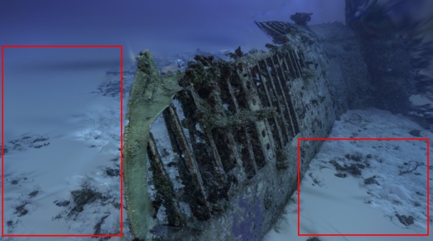
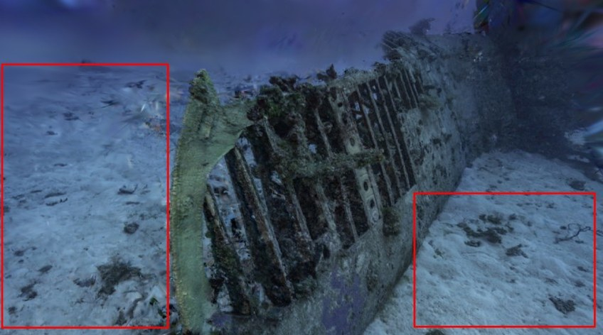
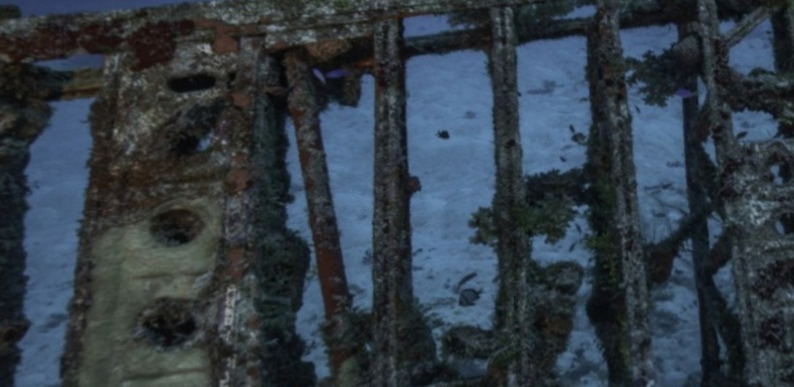
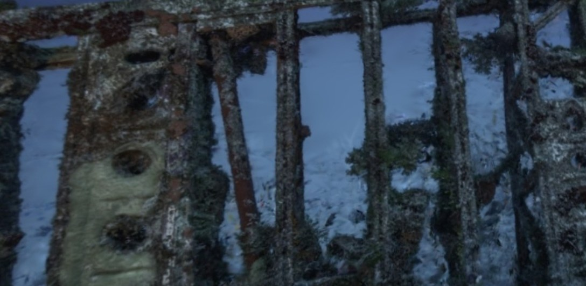
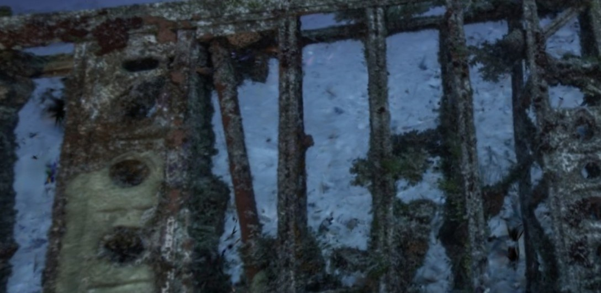

UniWorld Workshop, ECCV 2026
Underwater 3D scene reconstruction is challenging because wavelength-dependent attenuation, backscatter, and depth-dependent color shift cause photometric inconsistency across images. Existing medium-field methods condition on ray direction, assigning the same medium to every scene point along a ray and failing to capture spatial variation with depth. We present AquaVision3D, which instead conditions the medium on each Gaussian’s world-space position using a multi-resolution hash grid (instant-NGP), enabling spatially-varying attenuation, backscatter, and veiling-light parameters. We identify and fix a critical training collapse caused by an optimizer reset designed for MLPs, and we address channel imbalance and bounding-box sensitivity with practical tuning. Beyond outperforming vanilla 3D Gaussian Splatting (3DGS), AquaVision3D establishes a new spatial foundation for underwater medium modeling. While currently competitive with direction-conditioned methods on five of six scenes, the remaining gap explicitly reveals that angular scattering effects are complementary to spatial information, pointing toward a hybrid spatial-angular representation that our framework is well-positioned to adopt.
The revised underwater image formation model (R-UIFM) makes attenuation and backscatter depend on the distance z that light travels through water. Gaussians along a single ray sit at very different depths, yet direction-conditioned fields give them all the same medium.
One query per Gaussian (N per frame) instead of one per pixel (H×W). World coordinates are normalised to [0,1]³ by a per-scene box of half-width aabb_scale.
Medium values load into shared memory per Gaussian batch. The backward kernel accumulates medium gradients by Gaussian index g instead of pix_id, keeping the gradient path into the hash features intact.
Resetting Adam state at every prune suits a 20K-parameter MLP, but drives a fixed-size hash grid to a degenerate medium (βD, B∞ → 0) that PSNR, SSIM and LPIPS largely fail to reveal. We exclude the grid from the per-cull reset.
Held-out views of the Kwaj shipwreck (Submerged3D). Drag the divider to compare methods. Red boxes mark regions where AquaVision3D recovers more sand texture and surface detail.


WaterSplattingAquaVision3D (ours)
Ground Truth
WaterSplatting
AquaVision3D (Ours)Crop of the red-box region in view 3: AquaVision3D recovers finer surface detail and bolt texture on the wreck panels.
Both methods re-evaluated under identical settings: Nerfstudio 1.1.4, 15,000 steps, interval split (every 8th image held out), single RTX 3060.
Held-out PSNR (dB) per scene; higher is better. Labels give the gap to WaterSplatting.
| IUI3-RedSea | Curaçao | JapaneseGardens | Panama | |||||||||
|---|---|---|---|---|---|---|---|---|---|---|---|---|
| Method | PSNR↑ | SSIM↑ | LPIPS↓ | PSNR↑ | SSIM↑ | LPIPS↓ | PSNR↑ | SSIM↑ | LPIPS↓ | PSNR↑ | SSIM↑ | LPIPS↓ |
| SeaThru-NeRF† | 27.310 | 0.861 | 0.221 | 29.31 | 0.898 | 0.214 | 22.116 | 0.802 | 0.232 | 28.608 | 0.868 | 0.202 |
| 3DGS† | 22.980 | 0.843 | 0.246 | 28.313 | 0.873 | 0.221 | 21.493 | 0.854 | 0.216 | 29.200 | 0.893 | 0.152 |
| WaterSplatting | 30.83 | 0.916 | 0.189 | 29.52 | 0.923 | 0.149 | 23.16 | 0.876 | 0.152 | 32.03 | 0.944 | 0.083 |
| AquaVision3D (ours) | 29.79 | 0.905 | 0.205 | 25.31 | 0.876 | 0.270 | 22.20 | 0.863 | 0.208 | 30.45 | 0.929 | 0.110 |
† Cited from WaterSplatting (3DV 2025) under its own evaluation protocol, so not directly comparable to the re-evaluated rows. Bold marks the better of the two re-evaluated methods.
| WaterSplatting | AquaVision3D (ours) | |||||
|---|---|---|---|---|---|---|
| Scene | PSNR↑ | SSIM↑ | LPIPS↓ | PSNR↑ | SSIM↑ | LPIPS↓ |
| Isro | 26.67 | 0.853 | 0.199 | 25.37 | 0.850 | 0.207 |
| Kwaj | 28.16 | 0.878 | 0.172 | 26.97 | 0.869 | 0.156 |
| Average | 27.42 | 0.866 | 0.186 | 26.17 | 0.860 | 0.182 |
Cormoran and Tokai are excluded: under the default split their held-out cameras have too little coverage for reliable metrics in either method.
Gaussians outside [−s, s]³ are clamped to the grid boundary, so the half-width aabb_scale sets how much of the hash grid’s resolution a scene actually uses. We sweep it per scene and lock the value with the best held-out PSNR.
Held-out PSNR (dB, shared axis) against aabb_scale. The larger dot is the locked value used in all reported results.
| Scene | aabb_scale | PSNR (dB) |
|---|
Panama scores 30.45 dB at s = 44.7 and 30.23 dB at s = 52. Curaçao has a narrow optimum: moving from s = 36 to 38 drops PSNR by more than 11 dB (25.31 → 13.81), with the medium collapsing (B∞ → 1) and Gaussians pruned aggressively.
On Curaçao we trail the baseline on every held-out view (−1.9 to −6.1 dB). Its learned medium is nearly flat in space (B∞ spatial std 0.08 vs 0.13 on Panama) and strongly red-dominant, consistent with view-dependent scattering that a position-only field cannot express. A hybrid field, with B∞ conditioned on direction and βD, βB on position, is the natural next step.
| B∞ | βB | βD | |||||||
|---|---|---|---|---|---|---|---|---|---|
| Scene | R | G | B | R | G | B | R | G | B |
| IUI3-RedSea | 0.004 | 0.003 | 0.025 | 8.43 | 7.00 | 8.19 | 0.169 | 0.205 | 0.216 |
| Kwaj | 0.006 | 0.005 | 0.026 | 9.35 | 8.97 | 8.79 | 0.355 | 0.320 | 0.284 |
| Panama | 0.013 | 0.003 | 0.792 | 8.04 | 7.12 | 1.49 | 0.301 | 0.334 | 0.169 |
| Isro | 0.005 | 0.002 | 0.001 | 9.46 | 8.62 | 8.60 | 0.219 | 0.147 | 0.013 |
| JapaneseGardens | 0.016 | 0.024 | 0.765 | 9.11 | 8.11 | 0.74 | 0.215 | 0.223 | 0.215 |
| Curaçao | 0.926 | 0.043 | 0.031 | 0.61 | 9.23 | 9.08 | 0.203 | 0.315 | 0.331 |
Averaged over all Gaussians at the locked checkpoints. Bold values break the five-scene pattern and identify Curaçao as the channel-imbalance outlier.
@inproceedings{giri2026aquavision3d,
title = {{AquaVision3D}: Physically-Consistent Medium Modelling
for Underwater {Gaussian Splatting}},
author = {Giri, Kaushlendra Kumar and Bian, Shaojun and
Ihmeida, Mohamed and Wu, Yun and Tharib, Safa},
booktitle = {Proceedings of the European Conference on Computer
Vision (ECCV) Workshops},
series = {Lecture Notes in Computer Science},
publisher = {Springer},
year = {2026}
}
AquaVision3D builds on WaterSplatting (Li et al., 3DV 2025); please cite it as well if you use the baseline medium or CUDA rasterizer.